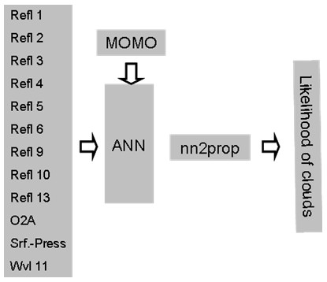

| Cloud Probability - Algorithm Specification | |
Algorithm Specification of the science processors of the MERIS/(A)ATSR Toolbox
The BEAM Cloud Probability Processor uses a clear sky conservative cloud detection algorithm which is based on artificial neural nets developed by Rene Preusker of Free University Berlin.
The cloud probability algorithm has been developed and implemented by Free University Berlin and Brockmann Consult. It is also used in the Global MERIS Land Albedomap project. The cloud probability algorithm is using 9 spectral bands of MERIS, the ratio of band 11 and 10, which is an indication of the absorption due to oxygen, the ECMWF surface pressure and the exact wavelength of band 11 as input. As an output, it yields a probability value (0 ... 1) indicating if a pixel can be regarded as a cloud or not. Such a probability permits a more flexible way to work with identified clouds compared to a binary cloud mask.
The algorithm uses two different artificial neural nets. The first one is used over the open ocean and the second one over land. The distinction between ocean and land is done using the altitude information. If the altitude is lower than -50 meters the ocean net is used.
The following figure shows the general structure of the cloud detection algorithm. During development of the algorithm, using the radiative transfer model MOMO, simulated cloud and non-cloud top of atmosphere radiance have been produced and an artificial neural net (ANN) has been trained. This neural net is now used in the Cloud Probability Processor, where it is fed with the reflectances and the pressure as shown in the figure. A post-processing is applied after the net (nn2prop) which scales the output of the neural net into a probability value.

Clouds are easily to detect when a manual classification of satellite images is done, their automatic
detection is difficult. Clouds have four special radiative properties that enable their detection: 1) clouds are
white,
2) clouds are bright, 3) clouds are higher than the surface and 4) clouds are cold. However clouds, as the most
variable
atmospheric constituent, seldom show all four properties at the same time.
Thin clouds show a portion of the underlying surface spectral properties, and low clouds are sometimes quite warm.
Additionally some surface types, like snow and ice have spectral properties that are very similar to some
of the cloud properties.
Therefore simple thresholding algorithms often fail and existing cloud detection schemes use a number of different cascaded threshold based tests to account for the complexity [Ackermann et al. 1998; King et al. 1992; Saunders and Kriebel 1988]. MERIS measures radiances in 15 channels between 400nm and 1000nm. Thus the very valuable thermal information and information about the liquid and ice water absorption at 1.6µm and 3µm are not available. The cloud detection for MERIS must therefore rely on 1), 2) and 3). In addition a slight absorption of snow at 900nm could be used to discriminate snow from low clouds.
In general, cloud detection algorithms can be separated into two classes: clear sky conservative and cloud conservative. Clear sky conservative algorithms are constructed such that the probability of a first order error in clear sky detection is very low; in other words: if a pixel is detected as clear the probability of cloudiness should be very low. This often has the side effect that many cloud free pixels are detected as cloudy. The opposite is true for cloud conservative algorithms. Here the probability of a first order error in cloud detection is low, with the side effect that many cloudy pixels are missed. This leads to two different nomenclatures.
Pure "clear sky" conservative algorithms mark pixels as cloud free or as probably cloudy, whereas pure cloud conservative algorithms detect cloudy or probably cloud free pixel. However, in practice most cloud detection algorithms try to minimize the probability of the first and second order errors in cloud and cloud free detection, only with the tendency to cloud or to clear sky conservative respectively. What kind of cloud detection algorithm should be used is mainly a question of the successive algorithm. Algorithms relying on cloudy pixels need a cloud conservative detection and vice versa; climatological applications often require balanced detection to be bias free.